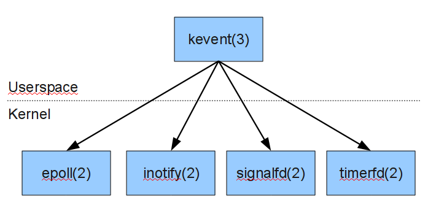

libkqueue
Overview
libkqueue is a userspace implementation of the kqueue(2) kernel event notification mechanism. Initial efforts are focused on porting to the Linux 2.6 kernel. There is also an experimental Solaris port.
libkqueue acts as a translator between the kevent structure and the native kernel facilities of the host machine. The following diagram illustrates how this works under Linux:

Benchmarks
On Linux, libkqueue provides O(1) scalability relative to the number of concurrent client connections. This is an improvement over the traditionalpoll(2) system call which has O(N) scalability. For testing, two versions of the thttpd web server were compiled: one using libkqueue, and one using poll(2). The ApacheBench benchmarking utility was used to compare the performance of both versions. A custom script was used to create thousands of idle connections to the server, to simulate the use of HTTP Keepalives on a busy real-world server.

Download
Source code releases can be found here. There are no binary packages yet.To checkout the Subversion repository, run the following command:
svn checkout svn://mark.heily.com/libkqueue
Mailing Lists
There are two mailing lists: one for general discussion, and one for announcements. If you subscribe to a mailing list through the web interface, you will need to sign up for a free Google account. If you prefer not to create a Google account, you can subscribe via email instead.To subscribe to the general discussion group, visit the group's web interface, or send an email to libkqueue+subscribe@googlegroups.com.
To subscribe to the low-traffic annoucements-only group, visit the group's web interface, or send an email to libkqueue-announce+subscribe@googlegroups.com.
Please note that if you use multiple email addresses, Google Groups does not allow you to choose which email address will receive messages. The address on the From: line of the subscribe request will be used as the destination address.
To unsubscribe from either group, send an email to [group name]+unsubscribe@googlegroups.com. If you have any problems subscribing or unsubscribing, send a note to Mark Heily.
Status
The kqueue and kevent functions are implemented, and most of the filters are working. The following filters are not yet implemented:
EVFILT_PROCEVFILT_AIO
Status: Linux
There are several compatibility issues to be aware of when using this library under Linux:- The NOTE_LOWAT flag is not supported. According to socket(7),
"The select(2) and poll(2) system calls currently do not respect the SO_RCVLOWAT setting on Linux, and mark a socket readable when even a single byte of data is available. A subsequent read from the socket will block until SO_RCVLOWAT bytes are available."
-
The NOTE_REVOKE flag is not supported because Linux does not have
a
revoke(2)system call. -
When an EVFILT_SIGNAL event is generated, the
datafield is set to 1 regardless of how many times the signal was received by the process. -
When an EVFILT_READ event occurs on a listening socket, the
datafield is set to 1 regardless of how many pending connections are available.
Status: Solaris
Here are the issues to be aware of when using this library under Solaris:- Solaris 10 or newer is required.
- The EVFILT_TIMER filter is implemented using high-resolution timers. In order to use high-resolution timers, the calling process must hold the PRIV_PROC_CLOCK_HIGHRES privilege. This privilege is not granted to ordinary users by default. It can be granted to individual users by running the following command as root:
# usermod -K defaultpriv=basic,proc_clock_highres $user
Status: All Platforms
Here are the issues to be aware of when using this library under any platform:- When a kqueue descriptor is closed, it's resources are not immediately reclaimed. Instead,
they will be freed the next time that the
kqueue(2)function is called. -
A signal handler is implicitly installed when a EVFILT_SIGNAL kevent is created. For compatibility with kernel-based
kqueue(2), programs must ignore signals that will generate kevents. After an EVFILT_SIGNAL kevent is created, a program must not modify the disposition of the associated signal. The following example shows the proper way to handle SIGUSR1 with a kevent:int main() { int kqfd; struct kevent kev; kqfd = kqueue(); signal(SIGUSR1, SIG_IGN); EV_SET(&kev, SIGUSR1, EVFILT_SIGNAL, EV_ADD, 0, 0, NULL); kevent(kqfd, &kev, 1, NULL, 0, NULL); }
Future Plans
In the future, I plan to add three more backends. One will be for Solaris and take advantage of the event port mechanism described in port_create(3C). The second will be a generic POSIX backend that does not use any non-portable system calls. The third will be a Microsoft Windows port that usesWaitForMultipleObjects().
Bugs
If you suspect that you have found a bug in libkqueue, please send an email report to the mailing list. If you can reproduce the bug, write a simple testcase and enable debugging output by setting theKQUEUE_DEBUG=y environment variable. Provide this debugging output and the code for the testcase in your bug report.
Portability of kevent(2) across BSD systems
There are some differences in the behavior of thekevent(2) system call across the various BSD-based operating systems. Here are some of the differences to be aware of:
- FreeBSD 8 does not set the EV_ADD flag for kevents on the eventlist, but OpenBSD and Darwin do. This means you should never use the equality operator (==) to test the flags; use the logical AND operator instead.
- The
EVFILT_USERfilter behaves differently from other filters with respect to the EV_ONESHOT flag. All other filters will preserve the flag when the event is triggered and placed on the eventlist. TheEVFILT_USERfilter does not preserve this flag. - OpenBSD has the NOTE_TRUNCATE fflag, while FreeBSD and Darwin do not.
- EVFILT_FS is undocumented and only available on FreeBSD and Darwin. Here is the CVS commit log which could be helpful to document this filter.
Requirements
libkqueue currently requires the following:- GCC
- Linux 2.6.22 or higher
- glibc 2.8 or higher
Usage
Ordinary Makefile
Here are the steps to use libkqueue in your program if you use an ordinary Makefile:- Add
`pkg-config libkqueue --cflags`to the CFLAGS variable. - Add
`pkg-config libkqueue --libs`to the LDADD variable. - Add
#include <sys/event.h>to the source code.
Autoconf/Automake/Libtool
If your program uses the GNU Autoconf/Automake/Libtool build system, the following steps will allow you to use libkqueue:- Add the following to
configure.ac:# # Prefer native kqueue(2); otherwise use libkqueue if present. # AC_CHECK_HEADER(sys/event.h, [], [PKG_CHECK_MODULES(KQUEUE, libkqueue)] )
-
Add the following to
Makefile.am(assuming your program is named "foo"):foo_CFLAGS+=$(KQUEUE_CFLAGS) foo_LDADD+=$(KQUEUE_LIBS)
Instead of using the $(KQUEUE_LIBS) variable, you could just add libkqueue.la to your programs LDADD variable.
Threads
libkqueue uses one or more helper threads, so all programs that link with libkqueue must also link against the pthreads library. Calls tokqueue() and kevent() are safe to be used from multiple threads.
Links
- Kqueue: A generic and scalable event notification facility [Lemon][PDF]
- Kqueues for Fun and Profit [Werner]
Solaris Event Ports
I do plan to add Solaris event port support to libkqueue once the Linux backend is complete and the internal API is stabilized. I checked the port_create(3C) manpage in Solaris 10 and OpenSolaris, and did not see any way to wait for signals. There is also no equivalent to EVFILT_VNODE in Solaris 10, although OpenSolaris has the PORT_SOURCE_FILE functionality.- Solaris 10 port_create(3C) manual page
- OpenSolaris port_create(3C) manual page
Contact
For more information, contact Mark Heily.